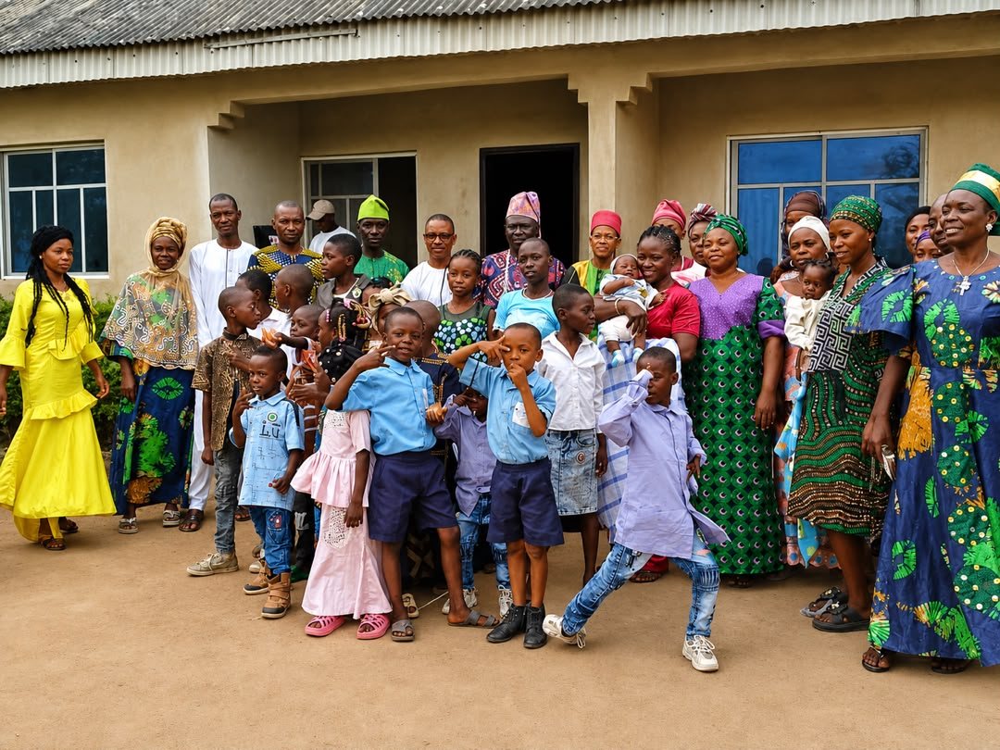

We started with one simple goal — build a school where children feel safe enough to try, fail, and try again.
KENWIN Nursery and Primary School opened its doors with a handful of pupils, two classrooms, and one conviction: that early childhood education is the single most important investment a family can make. Over the years, that conviction has grown into a full nursery and primary school trusted by families across our community.
What hasn't changed is our size of heart. We've stayed intentionally close-knit — small enough that every teacher knows every child, and every parent is treated like a partner in their child's growth.

To give every child a strong academic foundation, delivered with warmth, patience, and genuine care — so that learning feels exciting, not stressful, from the very first day.
To be the nursery and primary school families trust most — known for producing confident, kind, well-prepared children ready for secondary school and beyond.
Every child is known, valued, and looked after as an individual.
We hold high standards, gently but consistently, in and out of class.
Children learn to treat themselves and others with kindness.
Mistakes are part of learning — we build resilience, not fear.
Bright classrooms, safe play areas, and spaces sized and designed for young children to explore comfortably.
Airy, well-lit rooms suited to Nursery and Primary age groups.
Supervised outdoor space for active, healthy play every day.
A cosy library corner that builds a lifelong love of books.
Clean, comfortable dining space for balanced daily meals.